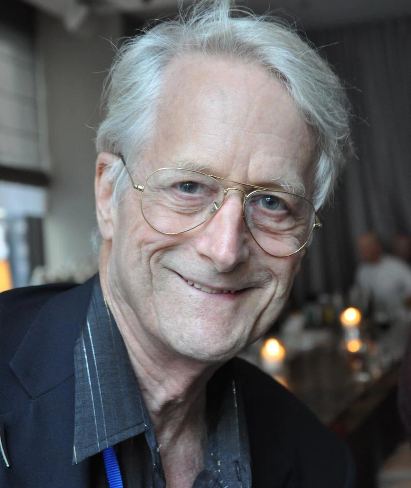

Ted Nelson, né le 17 juin 1937 à Chicago, est un sociologue américain, pionnier de l'histoire des technologies de l'information. Il est considéré comme l'inventeur du terme hypertexte en 1965. Né dans un milieu d'artistes, Nelson obtient une maîtrise de philosophie au Swarthmore College, près de Philadelphie en 1959.
Après un master de sociologie à l'université Harvard en 1963,
Ted Nelson va adopter une démarche à la fois sociologique et philosophique dans ses recherches sur l'information, les ordinateurs et les interfaces homme-machine. Imaginant une machine qui permettrait de stocker des données et de les mettre à la disposition de tous, partout, il met en place en 1960 le projet Xanadu et tente, avec plus ou moins de succès, de mettre en application ce qu'il nomme le projet original de l'hypertexte.
Le principe de l'hypertexte a été repris par de nombreux pionniers de l'informatique, comme :
- Douglas Engelbart pour mettre au point une interface homme-machine dans les années 1960;
- Bill Atkinson chez Apple pour développer HyperCard;
- Tim Berners-Lee en 1989, pour définir les bases du World Wide Web.
Ted Nelson est actuellement professeur à l'université d'Oxford en Angleterre.